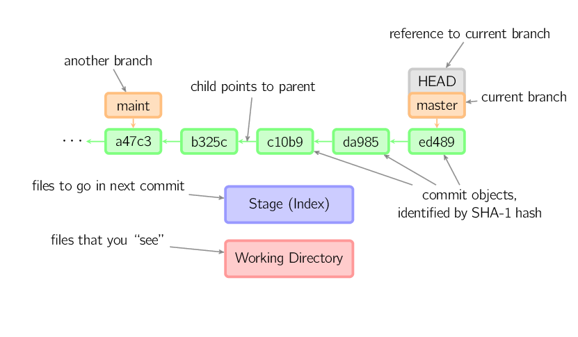
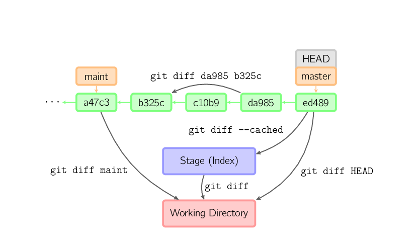
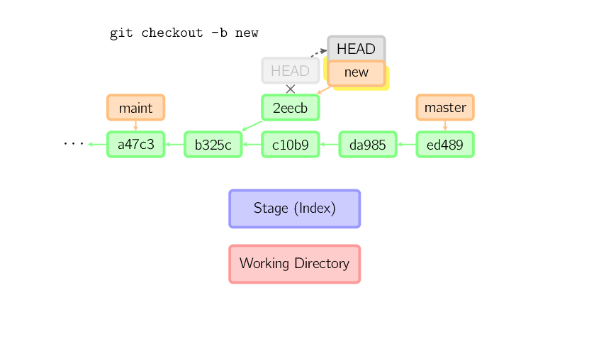

Git
(for real)
By Israel Saeta & Diego Gruber
What is Git?
Git is a Decentralized Version Control System (DVCS)
- Store snapshots of the current file contents of a project and track code changes between them
- There is technically no central server keeping track of everything
- Created by Linus Torvalds on 2005 to replace a commercial alternative
Why the "Git" name?
Linus: "I'm an egotistical bastard, and I name all my projects after myself. First 'Linux', now 'Git'"
('git' is British slang for "pig headed, think they are always correct, argumentative")
What can Git do for you?
Backup copy
Keep a backup copy of a previous state of a project
- Easy rollback when something breaks
- See how something was done time ago
- Checkout the snapshot at any point in time
- Forget about commenting out, just nuke it!
Track how, when, who, why
Every change (commit) includes:
- Lines of code changed, in multiple files
- Date and time
- Author name and email (to take the blame)
- Human-readable description of the changes (commit message)
Branch out your work!
(you can always merge back later)
Create as many extra branches as you want:
- Main development
- Bugfix and feature
- Experiments
Branches are cheap, Git just stores differences
Collaborate with others
- Peer / hierarchical review
- Comment on changes
- Iterative submissions + accept / reject
You can only use Git well if you understand how it works
Don't be a script kiddie
Structure of a Git repository
Basic commands (demo)
- git help command
- git init
- git clone URL
- git add file1 file2 ...
- git status
- git diff [--cached] [[ref1] [ref2]]
- git commit [-m] [-a] [--amend]
- git mv source dest
- git rm file
- git log [--graph] [--oneline] [--decorate]
git add / git commit

Mark changes for inclusion and save them
git diff
See differences
Branching commands (demo)
- git branch
- git checkout
- git checkout -b
git checkout branchname

Move head to a different branch
Also to specific commits or relative (HEAD~N)
git checkout -b branchname
Spawn new branch from current head
Merging
Don't be afraid
Merging basic idea
- git checkout branch-you-want-to-merge-to
- git merge feature-branch
Fast-Forward: The easy case

Current HEAD is ancestor of branch tip to merge
Three-way: The common case

Creates extra commit automatically
Conflicts - OMG
$ (master) git merge my-feature-branch
Auto-merging index.html
CONFLICT (content): Merge conflict in index.html
Automatic merge failed; fix conflicts and then commit the result.
$ git status
On branch master
You have unmerged paths.
(fix conflicts and run "git commit")
Unmerged paths:
(use "git add <file>..." to mark resolution)
both modified: index.html
no changes added to commit (use "git add" and/or "git commit -a")
Standard conflict markers
<<<<<<< HEAD:index.html
contact : email.support@github.com
=======
please contact us at support@github.com
>>>>>>> iss53:index.html
Collaborating with others
Remotes
- They are remote repositories
- Usually only one, origin, pointing to GitHub, BitBucket, etc.
- Local branches can track remote branches (master → origin/master)
Basic work with remotes (demo)
git clone URL [folder]
Clone all branches of remote repository, adding remote tracking heads for all them.
git pull [remote-name] [remote-branch]
Update remote-branch head and merge it into the current branch.